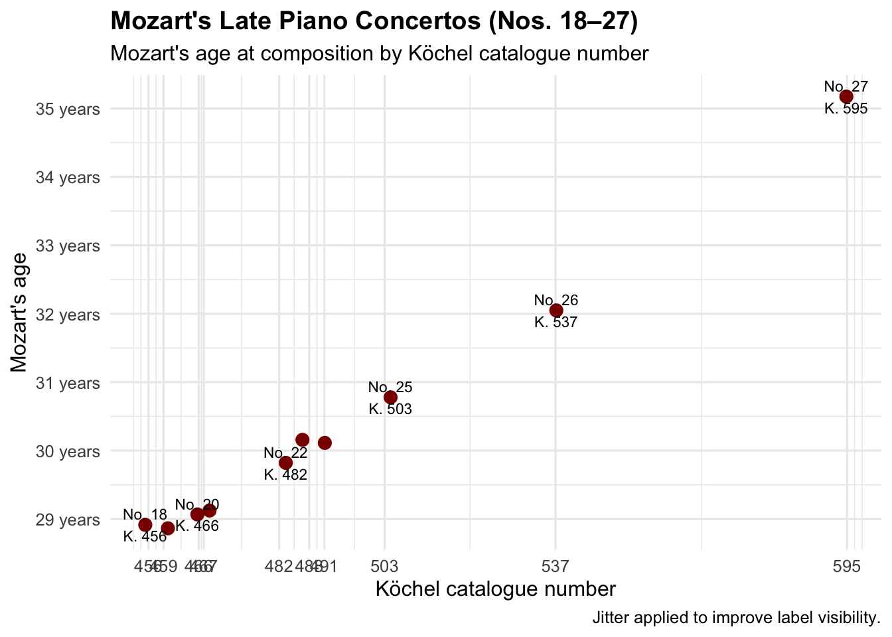

# A tibble: 10 × 10
concerto kochel key year month day completion_date age_years age_label
<int> <dbl> <chr> <dbl> <dbl> <dbl> <date> <dbl> <chr>
1 18 456 B-flat… 1784 11 30 1784-11-30 28.8 28 years…
2 19 459 F major 1784 12 11 1784-12-11 28.9 28 years…
3 20 466 D minor 1785 2 10 1785-02-10 29.0 29 years…
4 21 467 C major 1785 3 9 1785-03-09 29.1 29 years…
5 22 482 E-flat… 1785 12 16 1785-12-16 29.9 29 years…
6 23 488 A major 1786 3 2 1786-03-02 30.1 30 years…
7 24 491 C minor 1786 3 24 1786-03-24 30.2 30 years…
8 25 503 C major 1786 12 4 1786-12-04 30.9 30 years…
9 26 537 D major 1788 2 24 1788-02-24 32.1 32 years…
10 27 595 B-flat… 1791 3 5 1791-03-05 35.1 35 years…
# ℹ 1 more variable: concerto_label <chr>I was almost twenty-two when the movie Amadeus was released.
Up until then, my understanding of classical music was limited—mostly just the well-known composers and their most famous pieces. The movie didn’t just expose how little I knew; it showed the actual person behind the music, the tormented genius who wrote it.
Late Baby Boomers saw Mozart as the original rock-and-roll rebel and early Gen Xers were drawn in by the film’s darker, psychological edge. According to an AI Summary.
Starting with the poster, the movie startled me. It featured a demonic figure wearing a half-moon mask, with an inset of the Queen of the Night insignia, signaling the dark and mysterious side of the story. I watched Salieri move from bitter competition to the eventual acceptance that Mozart’s gift wasn’t merely human.
Then, as the movie ended and transitioned into the credits, the second movement of Piano Concerto No. 20 in D minor—Köchel catalogue 466—began to play.
It cut right through and elevated the everyday scenes and struggles of a twenty-something. Sitting there, it felt like I was being introduced to another world.
Later, I acquired a set of Mozart’s late piano concertos, all on vinyl. Listening to them back then, it felt as though the challenges of my late teenage years and early-to-mid twenties—all the ups and downs—were captured by the master. Even through those trial years, I felt encouraged by a quiet serenity about the future that was present in those slower movements.
Having returned from my missionary service in Los Angeles, I began to seek how I could contribute to society, starting by finally ceasing to be a menace to it—and getting married. I chose to stop fighting against the laws of nature and society, and instead align my life with them, much like how Salieri eventually had to accept the divine commission of Wolfgang Amadeus Mozart.
1. Historical data
The following table lists Mozart’s late piano concertos, their Köchel catalogue numbers, approximate completion dates, and his age at completion.
2. Chronological graph

3. Concertos and catalogue information
| Concerto | Köchel | Key | Completion date | Mozart’s age |
|---|---|---|---|---|
| 18 | 456 | B-flat major | 1784-11-30 | 28 years, 10 months |
| 19 | 459 | F major | 1784-12-11 | 28 years, 10 months |
| 20 | 466 | D minor | 1785-02-10 | 29 years, 0 months |
| 21 | 467 | C major | 1785-03-09 | 29 years, 1 months |
| 22 | 482 | E-flat major | 1785-12-16 | 29 years, 11 months |
| 23 | 488 | A major | 1786-03-02 | 30 years, 1 months |
| 24 | 491 | C minor | 1786-03-24 | 30 years, 2 months |
| 25 | 503 | C major | 1786-12-04 | 30 years, 10 months |
| 26 | 537 | D major | 1788-02-24 | 32 years, 1 months |
| 27 | 595 | B-flat major | 1791-03-05 | 35 years, 1 months |
4. Observations
- Mozart composed Concertos Nos. 18–19 at age 28.
- Concertos Nos. 20–25 were completed during 1785–1786, a particularly productive period.
- Concerto No. 20 (K. 466) is in D minor.
- Concerto No. 23 (K. 488) is in A major.
- Concerto No. 27 (K. 595) was his final piano concerto, completed in 1791.
5. Sources
- Neue Mozart-Ausgabe (New Mozart Edition)
- Köchel catalogue of Mozart’s works
- Mozart’s correspondence and historical chronology